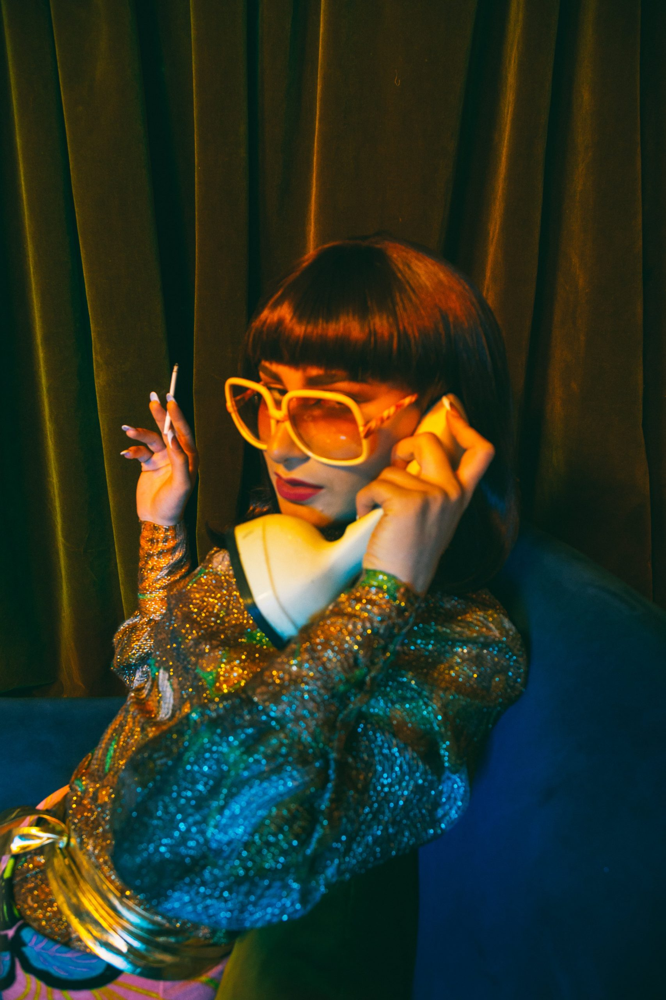

A los cinco años iba a clases de baile, escuchaba mucha música por sus papás melómanos (“ponían The Carpenters, Björk, mucho jazz, Billy Idol, Bowie, The Beatles, Massive Attack, The Sugarcubes”) y también jugaba con el Cubase —el programa de producción musical— junto a su papá bajista (“pero que se dedica a otra cosa”). Un día llegó la tele a casa, pusieron MTV y ella nunca más pudo sacarse a Britney de la cabeza. Le reventó el cerebro, para bien. Al fin pudo ver a varios músicos a los que no les conocía la cara y todo comenzó a entrarle por lo visual.
Estudió piano y baile, mientras componía “en al aire”. Durante el secundario, asegura que le hicieron “una lobotomía” con respecto a la idea de ser artista: “Se me terminó de licuar el cerebro por completo, me alejé de mis deseos reales, de mi ser, por querer sobrevivir, por la plata, y tuve que reconectarme con eso. Le pasa a un montón de gente, pero vos en el fondo sabés lo que querés hacer”. La idea de morirse de hambre era el fantasma: “Vengo de familia de artistas frustrados, de alguna manera, entre mil comillas, porque mi abuela tocaba el piano y no pudo seguir y mi mamá quería ser cantante, pero no la dejaron. No voy a flashear la misma, basta”.
Empezó a componer con el celular y la memoria creativa musical no tardó en aparecer. En esos días de salida de la adolescencia se dio cuenta de que necesitaba una computadora, para la que juntó plata con su trabajo de moza. Buscó clases de Logic y logró dar con 0-600, el productor de Neo Pistea y otras figuras del género urbano. Además, tomó clases de escritura con la cantante y compositora Violeta Castillo, que le recomendó que no buscara inspiración sólo en el mundo propio. “Somos un imán del caos, imaginate si todo el tiempo necesitamos que nos pase algo emocionante, terminás peleado con todo el mundo, no se puede tener una pareja estable, es un bajón. Su consejo me hizo bien porque empecé a buscar una inspiración en la vida, me conectó con la vida”, recuerda.